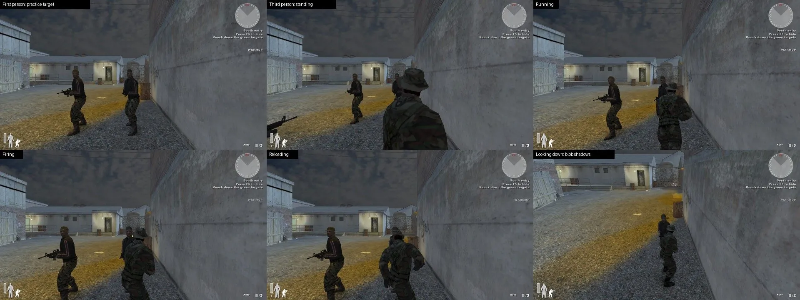

DirectX 12 renderer
Everything is drawn with DirectX 12 in the game's own window. Edge smoothing, ambient shadows, HDR, bloom and sharpening are optional. Older PCs fall back to OpenGL automatically.

A native 64-bit rebuild of the classic tactical shooter, drawn with DirectX 12. The original maps, soldiers and HUD, with a new launcher that hosts servers and keeps your game up to date.
TrueCombat: Elite was a realistic modern-combat total conversion for Enemy Territory: one life per round, real weapons, and maps built for slow, careful play. It still runs as a 32-bit mod on an engine from 2003.
TrueCombat: Platinum rebuilds it as a native 64-bit Windows game. The renderer is new DirectX 12 code, the HUD is matched against the original pixel by pixel, and movement speeds come straight from the original values. If DirectX 12 gives you trouble, Safe start runs it on OpenGL.

Everything is drawn with DirectX 12 in the game's own window. Edge smoothing, ambient shadows, HDR, bloom and sharpening are optional. Older PCs fall back to OpenGL automatically.
Layout, fonts, compass, stamina bar, round clock and objective lines from TC:E. The body silhouette turns yellow, orange and red as you take damage.
Hold Shift to sprint until your stamina runs out, C to crouch, X to go prone. Speeds follow the original TC:E values, and jumping on the move costs stamina.
Every shot lands on a region with its own damage. Crouched and prone players present a smaller target.
Press 4 and throw. One per life, lit by the map, the way the original did it.
The launcher checks GitHub for new versions, shows download speed and time left, and only installs updates signed by Team Terminus. Your settings and servers are kept.

Every image is a straight capture from the DirectX 12 renderer. No paintovers.


Drag across the image to compare the original look with the new presets. Same spot, same frame, Railhouse backyard at 1080p.
The Low / High / Ultra presets arrive in v0.30. DLSS and DLAA already work today: enter r_dx12Dlss 1 in the console, then vid_restart.

 Low
Ultra
Low
Ultra

The public list is built and tested. Servers hosted with List publicly switched on will show up here and in the launcher's Servers tab once the master server goes online.
Until then, host from the launcher and share your address. Others join you on UDP port 27971 by default. Everyone in a match needs the same version.
| Server | Map | Players | Mode |
|---|
No public servers yet. This list fills in automatically when the master server is running.
r_dx12Dlss 1 for DLAA, 2 to 5 for DLSS quality levels.Older notes and every download are on GitHub Releases.
Yes. Download it from GitHub Releases and play. Each release includes its source code and the licenses for the original game files.
Grab the press kit with logos, screenshots and a fact sheet.
You can host and join servers from the launcher. So far it has been tested on one PC over local connections, so expect rough edges across separate PCs and the internet.
Not yet. It is a native sandbox: movement, hit zones, the HUD and hosting are in, while recoil, spread, penetration and the original round rules are still being rebuilt.
Join the TrueCombat: Platinum Discord. That's where matches get organised, servers get shared and new versions are announced first.
Press Safe start in the launcher. It runs the game on OpenGL in a 1280 × 720 window, and the game also falls back to OpenGL by itself if DirectX 12 fails.